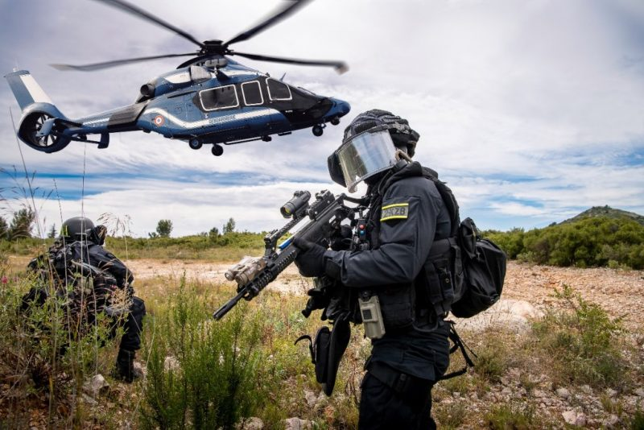

H145 Contact
Les hélicoptères jaune et rouge de la Sécurité civile sont connus du grand public sous le nom de « Dragon ». Ils sont à la disposition des sapeurs-pompiers, mais aussi du SAMU, de la police ou encore la gendarmerie, essentiellement pour accomplir des missions de secours d’urgence et de sauvetage. Hélicoptère "Dragon" de la Sécurité civile Ces appareils, de type EC-145, sont une trentaine en France, réunis dans le groupement d’hélicoptères de la Sécurité civile (GHSC) qui intervient depuis plus de 60 ans. Ils peuvent atteindre les 220km/h, ce qui leur permet d’être très rapidement mobilisés en cas de besoin. L’équipage de chaque hélicoptère est composé d’un pilote et d’un mécanicien opérateur. La cabine peut ensuite accueillir plusieurs professionnels en fonction de l’intervention à effectuer. Bien que les hélicoptères Dragon de la Sécurité civile soient dédiés au secours à personne, ils peuvent occasionnellement remplir des missions d'assistance technique, de police ou de reconnaissance sur les feux de forêts.
Avions de surveillance : Ces avions sont équipés de capteurs et de caméras pour effectuer des missions de surveillance aérienne. Ils peuvent être utilisés pour surveiller les incendies, les inondations, les mouvements de foule, les catastrophes naturelles, etc. Hélicoptères de secours : Les hélicoptères de secours sont essentiels pour le sauvetage en cas de catastrophes naturelles, d'inondations, d'accidents ou de situations d'urgence. Ils sont souvent équipés de treuils pour le sauvetage aérien, de systèmes de largage d'eau pour lutter contre les incendies, et de matériel médical pour les missions de secours médicalisé. Avions bombardiers d'eau : Ces avions sont conçus pour larguer de l'eau ou des produits retardants sur les incendies de forêt pour les éteindre ou les contenir. Ils sont particulièrement utiles dans la lutte contre les incendies de grande envergure. Avions de transport : Ils sont utilisés pour transporter du personnel, des équipements et des fournitures vers les zones touchées par des catastrophes ou des situations d'urgence. Avions de communication et de coordination : Ces aéronefs sont équipés de systèmes de communication avancés pour coordonner les opérations de secours aérien et terrestre, et assurer la liaison entre les différentes agences de secours. Drones : Les drones sont de plus en plus utilisés pour la surveillance, la cartographie, la recherche et la collecte de données en temps réel lors de situations d'urgence.
Airbus est un constructeur d’avion franco-allemand et une coopération industrielle internationale présente dans le secteur aéronautique et spatial civil et militaire. :

Marignane (Bouches-du-Rhône) : La base principale de la Sécurité Civile se trouve à Marignane, près de Marseille. C'est le siège de l'ensemble de la flotte d'hélicoptères de la Sécurité Civile en France.
Nîmes (Gard) : La base d'hélicoptères de Nîmes-Courbessac est l'une des plus importantes bases de la Sécurité Civile en France. Elle est souvent sollicitée pour les opérations de secours en cas d'incendies de forêt dans le sud de la France.
Aix-en-Provence (Bouches-du-Rhône) : La base d'Aix-en-Provence est une autre installation importante pour les opérations de secours en Provence-Alpes-Côte d'Azur.
Paris (Île-de-France) : La région parisienne dispose également de bases d'hélicoptères de la Sécurité Civile pour répondre aux besoins de la capitale et de ses environs.
Autres régions : La Sécurité Civile dispose de bases d'hélicoptères dans d'autres régions de la France, notamment en Corse, en Nouvelle-Aquitaine, en Occitanie, en Auvergne-Rhône-Alpes, etc.
Chaque base est équipée d'hélicoptères spécialement adaptés aux missions de secours, de surveillance et d'intervention. Ces hélicoptères sont prépositionnés stratégiquement pour pouvoir intervenir rapidement en cas d'urgence dans leur région respective. Les bases sont gérées par la Sécurité Civile et travaillent en étroite collaboration avec d'autres services de secours et d'urgence pour assurer la sécurité et le bien-être des populations en cas de besoin.
Formation : Les pilotes de la sécurité civile sont généralement des pilotes chevronnés qui ont obtenu les licences et qualifications nécessaires pour piloter les aéronefs utilisés dans ces opérations. Ils ont suivi une formation spécifique pour gérer des situations d'urgence, la navigation aérienne, la météorologie, et d'autres compétences essentielles à la sécurité civile. Expérience : De nombreux pilotes de la sécurité civile ont une vaste expérience de vol, souvent en tant que pilotes professionnels avant de rejoindre les équipes de sécurité civile. Leur expérience est précieuse pour faire face à des situations dangereuses et imprévisibles. Mission : Les pilotes de la sécurité civile sont chargés de piloter les aéronefs pour effectuer des missions de secours, de surveillance, d'évacuation de blessés, de lutte contre les incendies, de transport de fournitures, de recherche et de sauvetage, et d'autres missions essentielles lors de catastrophes et d'urgences. Coordination : Les pilotes travaillent en étroite coordination avec d'autres membres des équipes de sécurité civile, y compris les sauveteurs, les coordinateurs d'opérations, les médecins, les équipes au sol, etc. Ils suivent des protocoles stricts pour assurer la sécurité de toutes les personnes impliquées. Environnements difficiles : Les pilotes de la sécurité civile sont souvent confrontés à des environnements difficiles, notamment lorsqu'ils interviennent dans des zones de catastrophe ou dans des conditions météorologiques adverses. Leur formation et leur expertise sont essentielles pour prendre des décisions cruciales dans des situations potentiellement dangereuses.